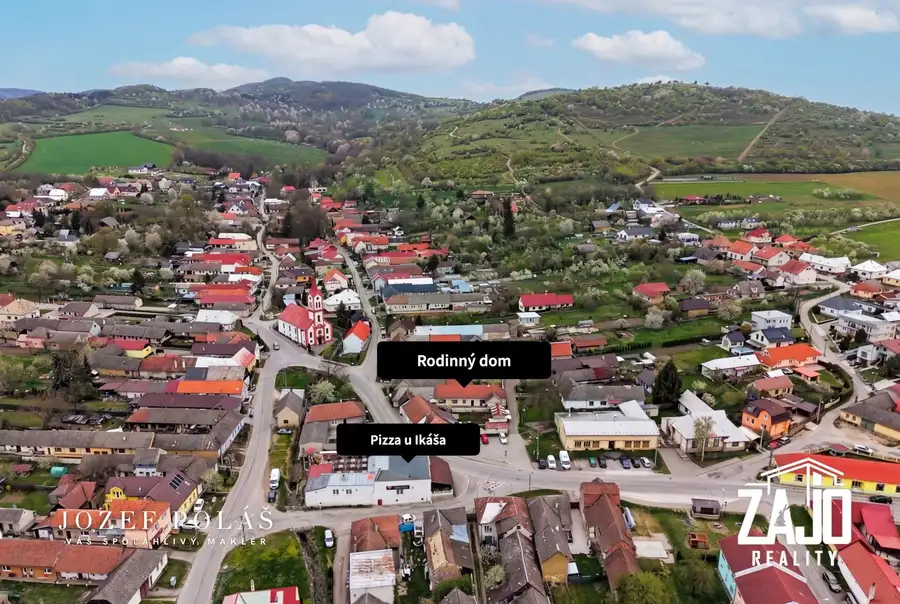
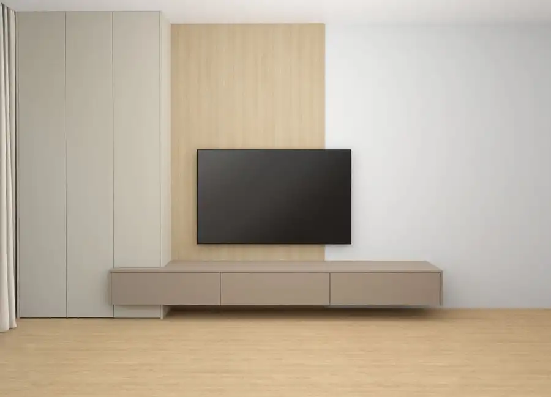
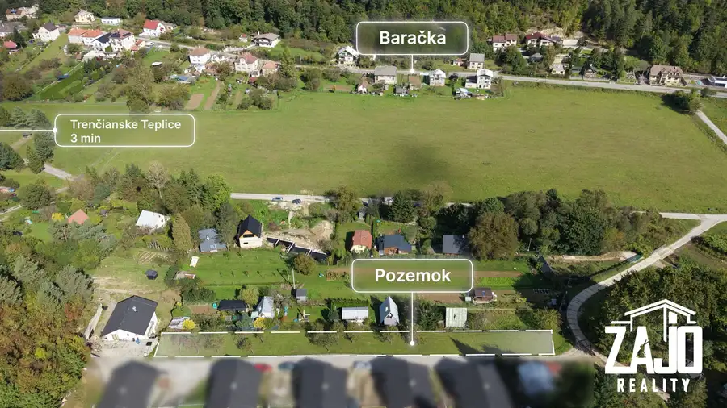

Na predaj | 4-izbový rodinný dom – Svinná (okres trenčín)
Svinná
- Plocha96 m²
- StavNovostavba
- VlastníctvoOsobné
- Energetická triedaA
O nehnuteľnosti
Ponúkame na predaj novostavbu 4-izbového rodinného domu v tichej a bezpečnej lokalite v obci Svinná.Dom je úsporný, má nízke prevádzkové náklady a predáva sa takmer kompletne zariadený – stačí sa len nasťahovať.Základné parametre:Úžitková plocha: 96 m²Rozloha pozemku je 418 m², slnečný, rovinatý a ponúka dostatok súkromia.Novostavba z roku 2019.Dispozícia:Vstupná chodba, obývacia izba prepojená s kuchyňou a výstupom na terasu, spálňa s výstupom na terasu, 2× detská izba, kúpeľňa s rohovou vaňou, samostatné WC, komora.Lokalita a dostupnosť: Obec Svinná má výbornú polohu s rýchlym napojením na hlavný cestný ťah:Bánovce nad Bebravou: iba 10 km cca 9 minút autom.Trenčín: 18 km cca 16 minút autom.Doprava: Pravidelné spojenie SAD a vlakTechnické vybavenie:Vykurovanie: Elektrické podlahové kúrenie (samostatný termostat v každej izbe)Tienenie & Bezpečnosť: Elektrické vonkajšie hliníkové žalúzie, video vrátnik, elektrická brána na diaľkové ovládanie.Inžinierske siete: Obecný vodovod, elektrina, žumpa.Mesačné náklady: Elektrina: 100 €, Voda: 20 € mesačneVybavenosť obce Svinná: Obec poskytuje kompletnú občiansku vybavenosť pre pohodlný rodinný život:Základná škola a materská škola, Základná umelecká škola (ZUŠ)Zdravotné stredisko a lekáreňPošta a potravinyKultúrny dom, obecná knižnicaFutbalové a multifunkčné / detské ihrisko, stravovacie zariadenia (pohostinstvo / reštaurácia)Cena: 267 000 €Kontakt pre obhliadky a bližšie informácie: 0902 822 849, e-mail: jozef.polas@zajoreality.sk
Parametre
| Bezpečnosť | Bezpečnostné dvere, Elektronická brána, Videovrátnik |
|---|---|
| Doprava | Diaľkový autobus, Vlak |
| Druh | Rodinný dom |
| Druh domu | Klasický dom |
| Dátum zverejnenia | 16. 9. 2026 |
| Energetická náročnosť | Nízkoenergetický |
| Energetický certifikát budovy | A |
| Energie | 120 |
| Plocha pozemku | 418 m² |
| Podpivničenie | Nedostupné |
| Počet izieb / miestností | 4 |
| Počet kúpeľní | 1 |
| Počet nadzemných podlaží | 1 |
| Počet spální | 1 |
| Prístupová komunikácia | Asfaltová |
| Rok kolaudácie | 2020 |
| Rok výstavby | 2019 |
| Stav nehnuteľnosti | Novostavba |
| Telekomunikácie | Internet |
| Terén pozemku | Rovinatý |
| Typ | Predaj |
| Typ konštrukcie | Tehlová |
| Vlastníctvo | Osobné |
| Vybavenie | Špajza, Záhrada, Krb, Altánok / posedenie, Vyhradené parkovanie |
| Vybavenie objektu | Zariadený so spotrebičmi |
| Vykurovanie | Krb, Podlahové |
| Zariadenie | Zariadené kompletne |
| Zastavaná plocha | 116 m² |
| Úžitková plocha | 96 m² |
Kde to je


Mohlo by Vás zaujímať

DomNové10 57 000 €Na predaj | rodinný dom Moravské Lieskové – okres Nové mesto nad Váhom Moravské Lieskové 28 m² Ponúkame na predaj 3 izbový rodinný dom v centre obce Moravské Lieskové, ktorý je ideálny na trvalé bývanie alebo ako chalupa. Obec má základnú…
BytNové10 195 000 €Na predaj | 3-izbový byt v projekte Vila Nizza, novostavba – Trenčianske Teplice Trenčianske Teplice 3-izbový86 m²3. podlažie V exkluzívnom projekte Vila Nizza, situovanom v srdci kúpeľného mesta Trenčianske Teplice, ponúkame na predaj moderne riešený 3-izbový byt – ideálny…
PozemokNové5 45 000 €Na predaj pozemok na stavbu chaty / mobilného domu – Trenčianske Teplice Trenčianske Teplice 1152 m² Ponúkame Vám na predaj krásny pozemok v kúpelnom meste Trenčianske Teplice časť Baračka, ktorý sa nachádza len pár minút od centra mesta.Lokalita je…